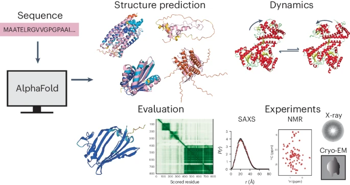

Understanding the Protein Structure Prediction Problem and the Role of AI in how we tried to solve it
Proteins are the building blocks of life, orchestrating nearly everything in our cells. But for decades, scientists have wrestled with one daunting question: how do these complex molecules fold into the precise 3D shapes that define their roles? Christian Anfinsen’s 1972 Nobel-winning hypothesis that a protein’s structure is determined by its amino acid sequence kickstarted this journey, inspiring researchers to tackle the “protein folding problem” - predicting how a seemingly linear chain of amino acids folds into the unique 3D shape that dictates each protein’s role. But it’s only now, with the rise of artificial intelligence, that we’re making leaps in solving this puzzle. This post aims to unpack the tech behind these advances, starting with the fundamental problem itself.
The Complexity of Protein Structure
Predicting protein structure is challenging because proteins, composed of amino acid chains, fold into complex shapes immediately upon formation. These shapes or conformations, define each protein's function. Determining how the complex folding occurs from the amino acid sequence alone is a significant challenge. Imagine trying to predict the shape of an intricate origami piece just by knowing the length of the paper – it’s sort of like that! This complexity isn’t just a theoretical problem; knowing a protein’s 3D structure helps us understand things like disease mechanics, drug interactions, and bioengineering.
The applications of protein structure prediction are vast, but the scientific problem itself has been famously difficult for several reasons:
- Endless Possibilities: A typical protein with 100 amino acids could fold in trillions of ways. Running a simulation on all those possibilities? Not realistic and totally futile!
- Sensitivity to Environment: Proteins don’t fold in isolation. Environmental factors like temperature, pH, and cellular interactions can influence folding, adding complexity.
- Not One-Way-Fits-All: Proteins don’t always adopt a single, static shape; they may shift conformation based on their role or binding partners.
Over the years, we’ve accumulated vast amounts of protein data through lab techniques like X-ray crystallography and NMR spectroscopy. However, these methods are time-consuming and expensive, making them impractical for exploring every unique protein. Fortunately, with tools like the Protein Data Bank, researchers now have access to an expanding archive of protein structures.

PDB database size over the years - The Protein Data Bank archive as an open data resource, Berman et. al.
How AlphaFold Reimagined Protein Prediction
Artificial intelligence, particularly deep learning, has redefined what’s possible in protein structure prediction. With the power to recognize patterns in large datasets, AI models can now connect amino acid sequences with their resulting shapes, bypassing brute-force simulation. This evolution has made structure prediction faster and more accurate.
Alphafold in the protein prediction workflow - The power and pitfalls of AlphaFold2 for structure prediction beyond rigid globular proteins, Agarwal and McShan
AlphaFold (from DeepMind), a pioneering AI model for protein structure prediction, has achieved breakthrough results by treating protein sequences as if they were languages. This approach leverages the principles of language modeling to predict protein structures based on patterns in amino acid sequences. Here’s how AlphaFold works:
Sequence Analysis
AlphaFold interprets amino acid sequences like sentences, learning relationships between amino acids to predict spatial interactions in the folded structure. To be more precise – the amino acids in each peptide or protein sequence can be thought of to be analogous to the alphabet characters in natural language.
- Each of the twenty common amino acids are represented by a one-letter or three-letter representation to mimic natural language characters.
- The shorter chain peptides, made up of around ~50 amino acids, are similar to words (e.g., "MKWVTFISLL" for a portion of a peptide).
- The sentences, which are a specific set of syntactically correct words, are analogous to longer complete proteins comprised of smaller chains arranged in a specific meaningful way. It is important to note here that the order of amino acids determines the structure and function of the protein.
Proteins and language - Towards Controllable Protein Design with Conditional Transformers, Ferruz and Höcker
Alignment Mechanisms
AlphaFold2 uses multiple sequence alignment (MSA), where many similar protein sequences are set alongside each other. By comparing and analyzing sequences of similar proteins, AlphaFold2 can identify evolutionary relationships between different proteins. A high-quality MSA is essential for AlphaFold2's accurate predictions and serves as a key input to the model's neural network, known as the Evoformer.
Pair Representations
The Evoformer network interprets and updates both the MSA and a unique feature called "pair representations." In AlphaFold2, every pair of amino acid residues in the protein, regardless of distance, is represented separately, enabling the software to encode relationships between them. This information can ultimately be interpreted as the relative positions and distances between amino acids, refining the structural hypothesis. Evoformer’s continuous flow of information between the MSA and these pair representations allows it to reason about spatial relationships, thereby enhancing the model’s prediction accuracy.
These alignment and pair representation mechanisms are conceptually similar to the attention mechanisms used in transformer models, enabling AlphaFold2 to focus on specific regions of the sequence that are structurally significant. In a naive transformer model, this is achieved by assigning weights to particular parts of the sequence to prioritize amino acids likely to interact and form bonds. This selective focus is especially useful for interpreting complex protein structures, ultimately enhancing the model's ability to make precise predictions.
Trained on extensive protein structure databases, AlphaFold generalizes to unseen sequences, resolving structural ambiguities without experimental validation. As a result, AlphaFold predicts structures for thousands of proteins, including many previously unknown, with remarkable accuracy and speed. The latest version of the AlphaFold model, AlphaFold3 which introduces the Pairformer model in conjunction with diffusion, is not limited to just single-chain proteins, but can also deal with and predict structures of complexes with DNA, RNA and some selected ligands and ions as well.
AlphaFold’s Broader Impact on Protein Science
AlphaFold’s AI models have opened doors previously considered closed. Some notable impacts are in the fields of:
- Drug Discovery: With knowledge of target protein structures, researchers can design drugs that fit precisely, enhancing drug discovery efficiency.
- Genetic Disease Research: Many diseases arise from protein misfolding or malfunctions. AI tools enable researchers to model these “problematic” proteins, providing insights into disease mechanisms and potential treatments.
- Synthetic Biology and Bioengineering: Designing proteins with specific structures paves the way for synthetic enzymes, biomaterials, and even programmable therapeutic proteins.
While AlphaFold’s impact is transformative, challenges remain. Currently, AlphaFold predicts static structures, while proteins are dynamic and often change shape based on their cellular environment. Future AI models may incorporate this flexibility, predicting multiple conformations or simulating environmental responses to capture proteins’ dynamic nature.
← Back to Blog